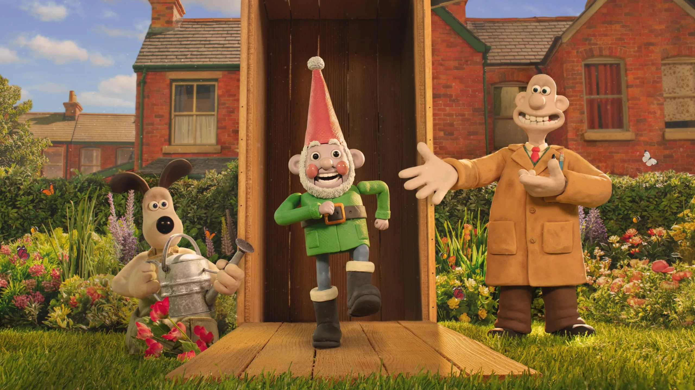
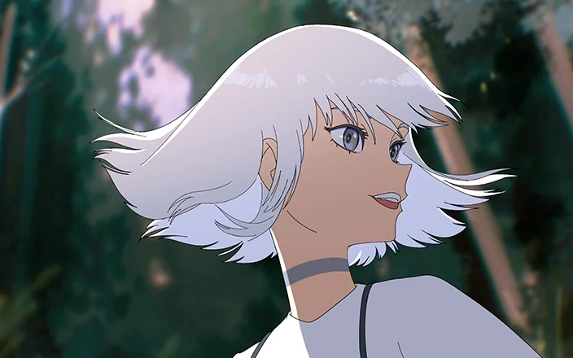
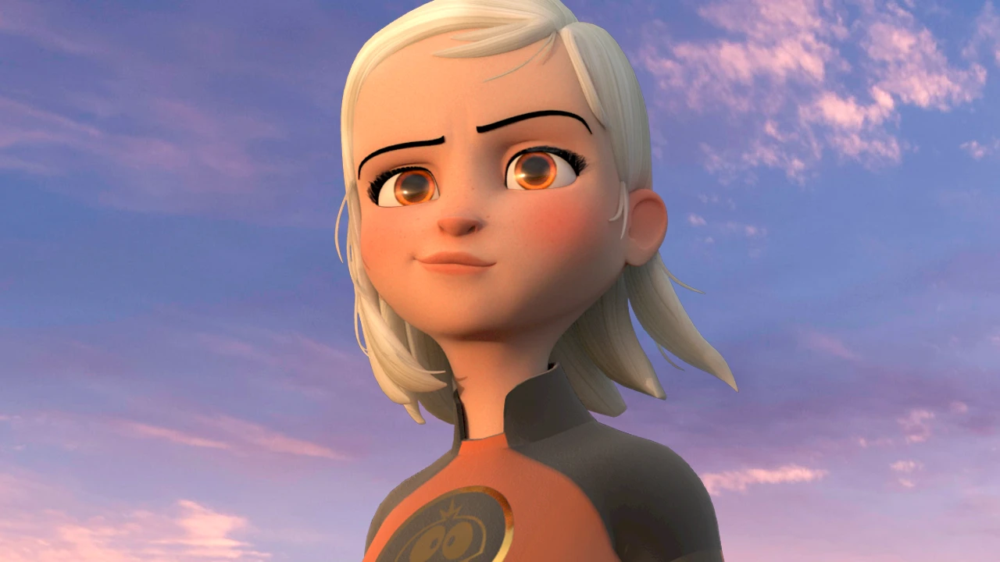

planos

stop motion
Animação quadro a quadro com objetos físicos. Cada fotograma é capturado individualmente, criando a ilusão de movimento ao reproduzir as imagens em sequência.

animação 2d
Desenho animado digital criado em ambiente bidimensional. Combina técnicas tradicionais de desenho com ferramentas digitais para criar animações fluidas e expressivas.

animação 3d
Animação tridimensional computadorizada que cria objetos e cenas em ambiente 3D. Oferece profundidade, realismo e possibilidades ilimitadas de criatividade visual.